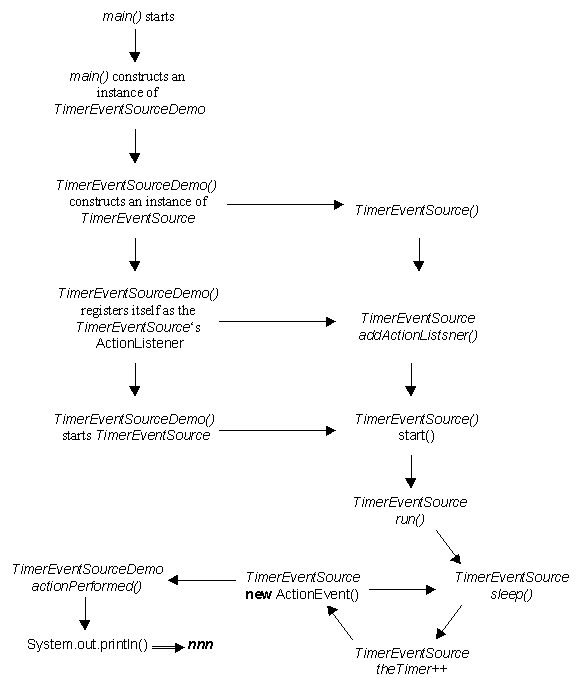

This first demonstration client for the TimerEventSource class will be implemented simply to receive the events and output the actionCommand attribute, containing the number of tenths of a second, on the terminal. Its implementation, as follows, is a little different from previous demonstration client harnesses.
0001 // TimerEventSourceDemo.java
0002 // Timer class which demonstrates receiving
0003 // ActionEvents from a unicaster.
0004 // Bridge between threading and GUIs.
0005 // Written for waypoint 5.
0006 //
0007 // Fintan Culwin, v0.1, March 1998.
0008
0009 import java.awt.event.*;
0010
0011 public class TimerEventSourceDemo extends Object
0012 implements ActionListener {
This class also commences by importing the java.awt.event package of classes as it too is concerned with event handling, being the registered recipient of events generated by an instance of the TimerEventSource class.
The class declaration states that it extends the Object class and that it implements the ActionListener interface. An interface is not a class, but it is a promise to Java that the class implementing the interface will provide a set of methods required by the interface specification. In this case the class promises to implement the ActionListener interface and the only method it is required to provide is actionPerformed(), as will be shown below.
When a listener argument was supplied to the addActionListener() method of the TimerEventSource class the formal argument was declared to be an instance of ActionListener. The actual argument, which has to be supplied when this method is used, can be an instance of any class so long as the class implements the ActionListener interface. This will guarantee that the listener will have an actionPerformed() method which can be called from the TimerEventSource run() action when events are generated and dispatched. Without this mechanism it would not be possible for Java to guarantee that an actionPerformed() method can be found when events are dispatched.
The implementation of the TimerEventSourceDemo continues as follows.
0014 private TimerEventSource aTimer;
0015
0016 public TimerEventSourceDemo() {
0017
0018 super();
0019 aTimer = new TimerEventSource();
0020
0021 try {
0022 aTimer.addActionListener( this);
0023 } catch ( java.util.TooManyListenersException exception) {
0024 // do nothing
0025 } // End try/catch.
0026 aTimer.start();
0027 } // End init.
Line 0014 declares an attribute of the TimerEventSource class, called aTimer. It is this instance which will be used as a source of ActionEvents and with which this demonstration client will be registered with to receive events from. The default constructor commences by calling its parent (Object) constructor and then constructs the instance of the TimerEventSource class to be referenced by aTimer.
On line 0022 it registers itself (this) as the listener of ActionEvents generated by aTimer, using its addActionListener() method. This registration may cause a TooManyListenersException to be thrown and, as this is regarded as an important exception, cannot be ignored. Accordingly the registration has to be within a try/ catch structure which does nothing if the exception is thrown.
Finally, for the constructor, having constructed the aTimer instance and registered itself as its ActionListener, the timer is started by calling its start() method, on line 0026. This, as previously explained, will cause the aTimer run() method to be called on a separate thread of control, and the events generated will be passed to this instance's actionPerformed() method; which is implemented as follows.
0030 public void actionPerformed( ActionEvent event) {
0031 System.out.println( event.getActionCommand());
0032 } // End actionPerformed.
This method is implemented as a call of System.out.println() passing as an argument the actionCommand attribute of the ActionEvent, event. The actionCommand attribute is obtained by using the event's getActionCommand() inquiry method, and will contain a String representing the number of tenths of a second which have elapsed.
The implementation of this demonstration client's main() method is as follows.
0035 public static void main( String argv[]) {
0036
0037 TimerEventSourceDemo theDemo = new TimerEventSourceDemo();
0038
0039 } // End main.
0040
0041 } // End class TimerEventSourceDemo.
All this has to do is create an instance of the class that it is a part of (TimerEventSourceDemo). This is necessary as only class instances can be registered as ActionListeners, not the class itself. The instance constructed will itself construct a TimerEventSource instance and listen to it. The result being that a sequence of consecutive numbers starting with "1" will be output on the terminal.
%java TimerEventSourcedemo 1 2 3 4 5 6 7 8 9 10 etc.
The only way to stop this program is to press <CTRL>C while the terminal window has keyboard focus. The following diagram illustrates the architecture, and sequence of actions, of this demonstration client.


Is there anything preventing the TimerEventSourceDemo main() method from constructing two (or more) instances of the TimerEventSourceDemo class? If there is not, what would be ouput by the client? Try it!